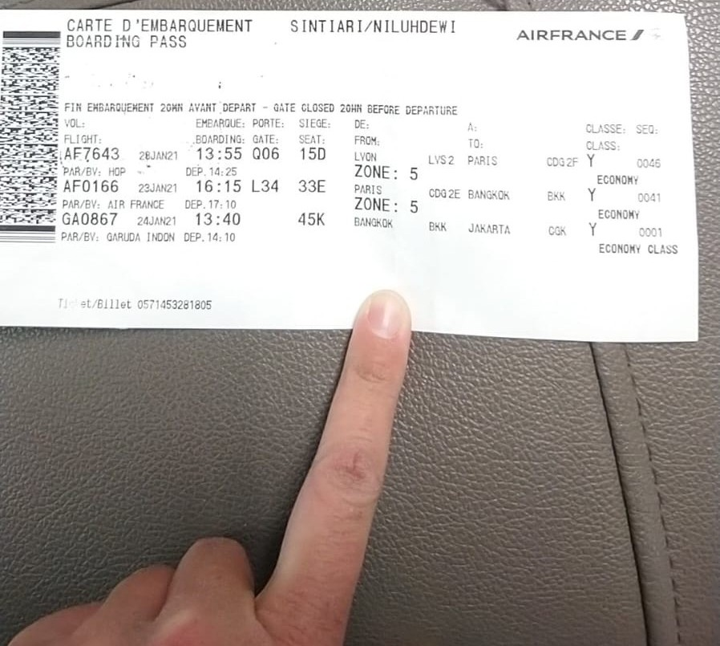
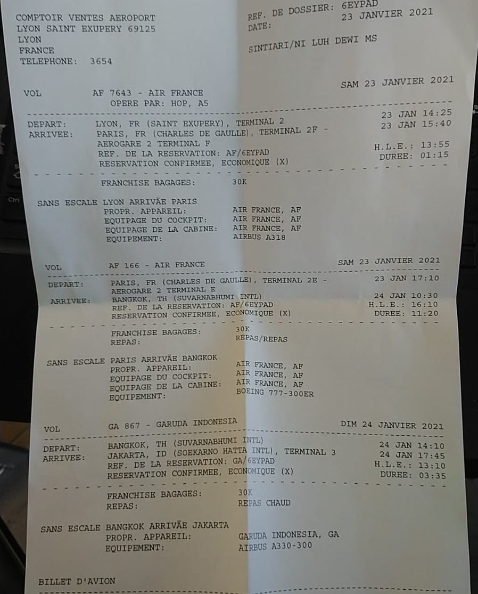
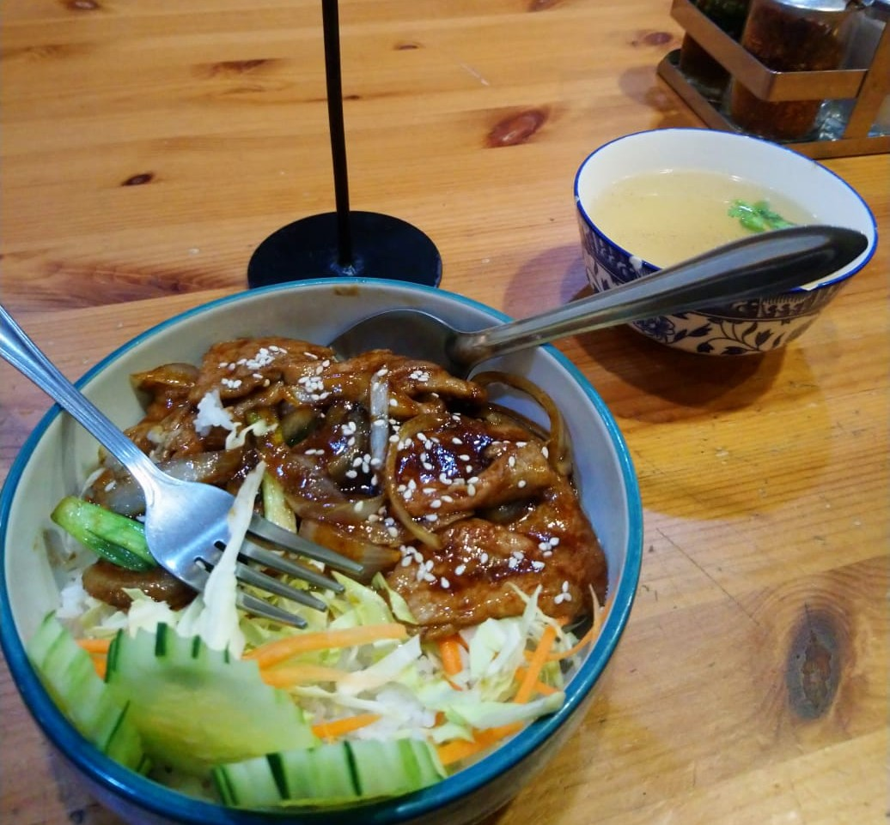

First week in Canada, mild winter.

Lagi kangen untuk menulis karena riset sedang stuck. Aku ingin bercerita sedikit tentang perjalananku for-good pulang ke Indonesia di masa-masa akhir studi S3-ku di Prancis. Cerita ini agak unik menurutku dan tidak pernah tebayangkan sekalipun akan terjadi padaku. Meskipun sudah satu setengah tahun berlalu, tapi detail setiap peristiwanya masih teringat jelas dan nampaknya akan membekas untuk waktu yang lama. Mungkin seiring berjalannya waktu, perlahan akan terlupakan. Jadi lebih baik kuceritakan saja supaya aku tidak lupa.
Desember 2020, aku bersiap kembali pulang ke Indonesia. Sebenarnya kontrak program PhD-ku baru berakhir pada bulan September 2021. Namun pandemi COVID-19 yang berkepanjangan membuatku jenuh. Sudah berbulan-bulan ada pembatasan perjalanan, bahkan lockdown, dan pembatasan penggunaan atau akses di lab/kantor/kampus tempatku bekerja. Bagi seorang peneliti yang 99% mengandalkan pikiran dan diskusi dengan kolega, hal ini memang cukup berat bagiku. Segalanya berubah menjadi on-line mode. Mulai dari kegiatan mengajar (tutoring) mahasiswa, PhD training, konferensi, seminar, dan bahkan diskusi dengan supervisor. Pada awal pandemi, hal ini cukup menyenangkan, karena cukup menghemat waktu untuk bepergian. Semuanya dapat dilaksanakan melalui layar laptop. Namun kian lama, aktivitas online ini mulai menjenuhkan. Sebagai mahluk sosial, tidak dapat dipungkiri kita membutuhkan interaksi secara langsung, saling bertatap muka. Terlebih lagi dengan kondisi yang jauh dari keluarga. Setiap kali mengikuti seminar, aku membayangkan jika saja posisiku di rumah, alangkah menyenangkannya. Ya begitulah derita anak kos yang sedang kuliah jauh dari rumah.
Singkat cerita, penerbanganku untuk ke Indonesia dijadwalkan pada hari Sabtu, 23 Januari 2021. Saat itu aku tidak mengabari keluargaku sebelumnya, karena berniat memberikan kejutan. Terbayang bagaimana reaksi mereka ketika tiba-tiba melihatku sudah di rumah. Bahagia pastinya. Begitu pikirku saat itu. Di hari sebelumnya, pada hari Jumat, aku sudah keluar dari apartemen. Masih ingat bagaimana rempongnya saat itu. Aku saat itu berbagai apartemen dengan salah seorang mahasiswa Indonesia, di sebuah apartemen dengan dua kamar, shared kitchen and bathroom. Sudah sejak berhari-hari sebelumnya kami rempong menjual barang, memberikannya ke orang, dan menyumbangkannya. Di hari kepindahan pun, aku masih rempong menitipkan koper ke tempat Bu Neni, seorang ibu muda di Lyon yang sangat baik.
Sore hari setelah pindahan, aku bersama temanku singgah di apartemen Bu Neni. Kami makan malam bersama sekaligus merayakan perpisahan, sebab temanku juga akan pindah ke Paris hari itu. Bu Neni memang salah satu ibunya mahasiswa di Lyon yang super baik. Aku sangat berhutang budi pada beliau selama di Lyon, apalagi menjelang sidang disertasi-ku.
Sekitar pukul 22.00 kami menuju bandara Saint Exupery Lyon. Kami harus mengejar kereta malam itu, sebab kereta bandara untuk keesokan harinya baru mulai beroperasi pada pukul 05.00, sementara penerbanganku dijadwalkan pada pukul 07.00. Jadi lebih baik menginap di bandara. Dua buah koper besar, sebuah koper kabin, sebuah tas tangan, dan sebuah ransel besar menemani perjalananku kali itu. Maklum saja, sudah lebih dari 4 tahun tinggal di Prancis. Padahal sudah banyak barang yang aku singkirkan, tapi masih banyak juga yang harus aku bawa pulang.

Pukul 04.30 area check-in untuk penerbanganku sudah mulai ramai. Hari itu aku dijadwalkan untuk terbang ke Amsterdam dengan maskapai KLM, untuk selanjutnya ke Jakarta dengan Garuda Indonesia. Mengapa ke Jakarta dan bukan ke Bali? Iya karena di masa pandemi kala itu, semua orang yang baru terbang dari luar negeri wajib menjalani masa karantina selama 5 hari, sebelum melanjutkan perjalanan ke daerah masing-masing. Di area check-in, aku melihat ada banyak orang yang dialihkan menuju Customer Service Air France (ya memang Air France dan KLM ini sistemnya joint). Karena penasaran, aku menghampiri kerumunan untuk bertanya apa yang terjadi. Ternyata, baru saja ada peraturan tambahan dari pemerintah Belanda, bahwa semua orang yang menuju Belanda melalui jalur udara wajib menyertakan hasil negatif tes COVID dengan antigen, di samping juga menyediakan hasil negatif tes PCR. O-h m-y G-o-d!
Aku langsung memeriksa ponsel, untuk mengecek apakah hal ini diinformasikan sebelumnya. Ya dan benar guys, mereka menginformasikan melalui SMS (bukan email), pada malam sebelumnya sekitar pukul 20.00. Aku ingat saat itu sedang makan malam dan tidak memeriksa pesan yang masuk, tapi beberapa kali memeriksa email karena kupikir jika ada informasi penting, maka akan diinformasikan melalui email. Namun jikalau pun saat itu aku mengetahui hal ini, nampaknya akan susah juga, karena tes antigen harus diambil paling lambat 4 jam sebelum keberangkatan, yang mana akan cukup susah juga. Yes you know, di Prancis, sangat jarang apotek yang buka 24 jam, because French people just hate working in a non-normal working hours. Saat itu, di airport Saint Exupery juga belum tersedia tes antigen selama 24 jam. Penyedia layanan tes antigen di airport baru buka pukul 09.00.
Setelah berdiskusi cukup lama dan alot, ditambah banyak orang yang protes, akhirnya diputuskan bahwa orang yang tidak dapat terbang pagi itu akan diberikan tiket pengganti tercepat untuk penerbangan ke tujuannya masing-masing. Pihak maskapai memberikan aku alternatif untuk mengganti rute penerbangan menjadi Lyon-Paris-Bangkok-Jakarta, diberangkatkan pukul 14.40 dari Lyon. Aku memastikan kepada pihak maskapai jika dokumen yang aku bawa sudah lengkap dan aman untuk penerbangan itu. Yes, terbang di masa pandemi is really something guys! Super ribet! Harus menyediakan tes ini, tes itu, dan mengecek banyak hal agar semuanya aman. I can still feel the situation at that time, when I always hoped that the pandemic would end soon.
Okay, finally aku terbang ke Paris siang itu dengan menggunakan Air France. Penerbangan ke Paris memakan waktu kurang dari 1,5 jam. Namun aku berkejaran dengan penerbangan berikutnya menuju Bangkok karena waktu transfer sangat mepet. Di bandara Charles de Gaulle, di boarding gate menuju penerbangan berikutnya, aku kembali menanyakan kepada pihak maskapai jika dokumen yang aku bawa sudah lengkap. Mereka menjawab bahwa aku cukup mengantre saja dan jika aku diizinkan masuk ke pesawat, maka everything will be okay. Sejujurnya perasaanku saat itu agak tidak nyaman. Tapi aku merasa mungkin saja hal itu akibat kelelahan yang berkepanjangan. Pindahan, mengurus dokumen ini itu di kampus, dan masalah penerbangan ke Amsterdam. Jadi aku mengabaikan rasa tidak nyaman itu. Sambil menunggu waktu boarding, aku menyempatkan diri untuk browsing terkait dengan prosedur transfer di Bangkok. Saat itu aku melihat kebanyakan penumpang membawa sebuah dokumen. Ah mungkin mereka memang mengunjungi Bangkok, dan bukan hanya transit. Begitu pikirku meyakinkan diri bahwa semuanya aman.
Perjalanan ke Bangkok memakan waktu sekitar 11 jam. Waktu penerbangan kunikmati dengan tidur, karena kelelahan. Bangun di saat jam makan saja. Rasa senang menghampiriku karena sebentar lagi aku akan sampai di Indonesia. Entah pukul berapa saat itu ketika pesawatku mendarat di bandara Suvarnabhumi, Thailand. Namun apa mau dikata, belum 10 langkah dari pesawat, kulihat petugas berjejer untuk memeriksa kelengkapan dokumen transfer kami. Seorang wanita bertanya kepadaku apakah aku memiliki surat izin dari kedutaan Thailand untuk transfer di Thailand, and of course I didn’t! Jadi, setiap orang yang berkunjung ke Thailand, bahkan hanya untuk transit wajib mendapatkan Certificate of Entry yang dikeluarkan oleh Thailand embassy di Prancis. Ya Tuhan, ini benar-benar masalah besar. Aneh juga mengapa surat ini tidak diperiksa ketika di Prancis saat di boarding gate. Para petugas itu memberi tahu bahwa seharusnya ini diperiksa ketika check-in oleh pihak maskapai di Prancis, dan mereka sudah tahu sejak awal bahwa aku datang tanpa sertifikat tersebut karena mereka dapat melihat dari daftar penumpang bahwa aku adalah penumpang tambahan (akibat mengganti rute penerbangan).
Lalu solusinya apa? “You must go back to Lyon tonight!”, kata wanita itu. Tidak bisa tidak. Lututku langsung lemas. Can you imagine guys, how long I had been traveled? It was about 3 hours away from Jakarta, and I had to go back to France by taking another 15 hours flight! That was crazy!
Tapi of course, the regulation takes over humanity. Mereka memaksaku untuk membeli tiket kembali ke Lyon, dan mengatakan bahwa aku dapat mengajukan reimbursement ketika sudah sampai di Lyon kepada pihak maskapai. Entah beruntung atau tidak, kebetulan saja kartu debitku saat itu sudah over limit, sehingga tidak dapat digunakan. Yes, of course they asked me to call a friend. Bu Neni menjadi orang yang terpikirkan saat itu untuk kumintai bantuan. Beliau sayangnya tidak bisa membantu karena kartunya juga sedang bermasalah. Dia membantuku untuk menghubungi salah satu temanku yang lain, dan menyarankan aku agar menghubungi Atdikbud (Atase Pendidikan dan Kebudayaan) KBRI Paris. Akhirnya aku menghubungi Prof. Warsito untuk meminta saran beliau. Beliau menceritakan kasusku kepada Atdikbud KBRI Thailand, dan ya seperti dapat diduga, pihak KBRI tidak dapat membantuku karena mereka tidak memiliki wewenang untuk ikut campur dalam urusan domestik Thailand. Bahkan mereka tidak akan diizinkan untuk ke bandara. It was just not allowed. Beliau membantuku untuk menghubungi Manajer Garuda Indonesia di Thailand. Yah, memang tidak ada solusi lain selain kembali ke Prancis, namun mungkin aku bisa bernegosiasi agar tiket ke Prancis diberikan langsung oleh maskapai.
Sebenarnya kalau dipikir-pikir saat itu aku merasa sedikit cool, keren gitu, hehehe karena sampai Aktdikbud bahkan Manajer Garuda Indonesia pun membantuku. Kapan lagi coba ada kesempatan seperti ini. Singkat cerita, beliau menceritakan regulasi maskapai seperti apa, bahwa memang sudah seharusnya maskapai memberikan tiket untuk aku kembali ke Prancis. Berulang kali beliau-beliau ini meyakinkan bahwa aku adalah seoran doctor candidate, dan sudah seharusnya aku bisa defense dan mempertahankan argumenku. Akhirnya setelah berjam-jam ngotot dan bernegosiasi dengan pihak perwakilan bandara dan maskapai (di mana mereka meminta saya membeli tiket sendiri, tetapi saya tetap bersikeras bahwa kejadian ini bukanlah kesalahan saya, namun adalah kesalahan pihak maskapai yang mengirim saya ke Bangkok tanpa memeriksa dengan hati-hati), akhirnya saya mendapatkan boarding pass saya ke Lyon. Mereka setuju memberikan saya tiket karena menurutnya "setengah" dari kejadian ini adalah akibat kesalahan maskapai. But, hey, wait, that's mostly the fault of the airlines and airports, not just a half!
Penerbanganku dijadwalkan pada tengah malam itu, dengan rute Bangkok-Amsterdam-Lyon. Yes, really, they would bring me to Amsterdam. Mereka juga membekaliku dengan surat bukti perjalanan yang berisikan itinerary perjalananku sejak aku berangkat dari Lyon, dan di surat itu juga memuat kasus yang aku alami. Ini karena aku memberikan argumen bahwa setibanya di Amsterdam atau Lyon, hasis tes COVID-ku sudah tidak valid. Terlebih, aku tidak memiliki surat antigen untuk ditunjukkan ke pihak bandara di Amsterdam.

Selama menunggu jadwal penerbangan, aku dikawal seperti narapidana. Ini bukannya melebih-lebihkan ya. Tapi memang begitu adanya. Mulai dari makan, hingga ke toilet. Bahkan petugas yang menjagaku berganti shift. Mungkin pihak bandara khawatir kalau aku nyasar. Jika seperti itu, itu juga menjadi tanggung jawab mereka ya. Singkat cerita, malam itu aku pun terbang ke Amsterdam. Aku diberikan kursi paling belakang, dekat dengan area kitchen. Bahkan selama penerbangan, para pramugari KLM memberiku perhatian lebih, membawakan air, dan sarapan ketika aku melewatkannya. Memang selama penerbangan itu aku hanya tidur, karena super exhausted. Bayangkan saja apa yang sudah aku lalui selama beberapa hari itu. Bahkan aku juga sudah lupa apakah itu adalah hari Minggu atau hari Senin. Yang jelas, weekend itu kuhabiskan di udara. Perubahan zona waktu yang sudah terbolak balik membuatku pusing.
Setibanya di Amsterdam Schiphol airport, tanpa aku duga, dua orang staf dari KBRI Den Haag menjemputku hingga ke dalam. That was surprising and amazing at the same time. Senang dan kagum juga dengan perhatian pihak KBRI terhadap WNI yang sedang dalam masalah. Hal itu membuat pandanganku terhadap KBRI berubah total. Meskipun aku tidak pernah mempunyai pengalaman buruk dengan KBRI, tapi sebagian temanku ketika di luar negeri seringkali bercerita bahwa mereka memiliki pengalaman kurang menyenangkan dengan KBRI. So please remember this guys, for those of you who are going abroad for study or travel or anything, simpan dengan baik nomor kontak orang KBRI. KBRI adalah tempat pertama yang harus kalian tuju ketika menemui permasalahan di luar negeri, terutama menyangkut keselamatan ya, misalnya kehilangan paspor, dirampok, atau seperti apa yang aku alami. Sekarang aku memahami mengapa ini sangat penting.
Staf KBRI tersebut mengantarkan aku hingga pemeriksaan menuju ke boarding gate. Mereka membantuku menjelaskan kepada pihak imigrasi Belanda tentang apa yang aku alami, dan syukurnya semua aman. Di boarding gate, aku menyempatkan bertanya kepada petugas maskapai KLM yang bertugas tentang prosedur untuk meminta tiket pengganti. Karena kantornya terletak di terminal yang berbeda, jadi aku memutuskan untuk bertanya di kantor Air France yang ada di bandara Saint Exupery Lyon. Sekitar pukul 09.30, aku pun terbang ke Lyon.
Aku akhirnya mendarat dengan selamat di Lyon pada tanggal 25 Januari 2021, pukul 11.00. Ya kurang lebih dua harian aku berpindah-pindah dari satu bandara ke bandara yang lain. Lebih dari 24 jam waktuku habis di udara. Tapi tidak apa, yang terpenting sudah tiba dengan aman. Setibanya di Lyon, aku langsung menuju kantor Air France untuk menceritakan kejadian yang aku alami. Petugas menyarankan aku untuk langsung ke Customer Service Air France yang berada di lantai 1. Jadi aku kesana dan sekali lagi menceritakan kejadian tersebut. Tanpa ba bi bu, mereka langsung memberiku tiket pengganti untuk penerbangan pada minggu berikutnya. Mungkin mereka memang menyadari bahwa ada human error dari pihak mereka. Aku mencoba menanyakan prosedur komplain karena kejadian ini, dan hmm... petugasnya malah mengomel dan menyuruhku silahkan komplain, tidak akan ada yang peduli. Seharusnya kamu meminta tiket ke Garuda Indonesia, ini kami sudah baik berusaha memberikan solusi. Silahkan komplain tapi tidak akan ada hasilnya. Dan bla bla bla bla...
Ya intinya aku sudah bersyukur juga mendapatkan tiket pengganti ke Indonesia. Sempat khawatir jika mereka mengatakan itu bukan tanggung jawabnya, dan aku harus membeli tiket yang baru. Minusnya, aku jadi tidak sempat naik Garuda Indonesia, padahal itu yang menjadi impianku, ingin mencoba penerbangan internasional Garuda Indonesia. Jadilah aku menghabiskan seminggu tambahan di Lyon.
Seminggu di Lyon aku habiskan dengan menyenangkan. Ke lab, bertemu supervisor, menyelesaikan beberapa hal yang sebelumnya tertunda, shopping, dan sebagainya. Cuma agak ketar-ketir. Rute penerbanganku berikutnya adalah Lyon-Amsterdam-Bangkok-Jakarta. Terdengar familiar? Yess, benar sekali! Itu adalah rute yang sangat mirip dengan rute yang aku jelajahi sebelumnya. Bedanya, kali ini penerbangan ke Amsterdam dijadwalkan sekitar pukul 11 pagi. Jadi aku memiliki cukup waktu untuk mengambil tes antigen. Transit di Bangkok pun seharusnya tidak menjadi masalah karena penumpang tidak melewati imigrasi. Pesawat hanya menurunkan penumpang dan mungkin mengisi bahan bakar. Jadi tidak ada pergantian pesawat, begitu kata petugas Air France yang memberiku tiket. Ya moga-moga benar begitu, doaku setiap hari. Aku juga sudah browsing dan memang ada beberapa kondisi penerbangan seperti itu. Bersyukurnya, pada saat itu pihak KBRI Paris masih setia mengawalku. Mereka mengatakan akan membantuku hingga aku sampai di Indonesia. Ya Tuhan, ini membuatku sangat bersyukur menjadi seorang WNI. Pihak KBRI meminta data penerbanganku dan mecari tahu tentang rute yang akan aku lalui. Menurut mereka rute itu aman karena aku tidak perlu transfer, dan pada minggu sebelumnya terdapat WNI yang kebetulan pulang ke Indonesia dengan penerbangan serupa.
So, pada hari yang ditentukan, aku pun terbang ke Indonesia. Kali ini penerbanganku sepertinya aman, I had a good feeling at that time. PCR dan antigen setidaknya aman. Meskipun selama perjalanan sedikit harap-harap cemas juga. Aku lebih menikmati perjalanan kali itu. Kondisi tubuh yang lebih segar membuatku lebih semangat. Barang bawaanku kali itu bertambah sedikit, dari awalnya ransel biasa menjadi sebuah ransel gunung, dan ada beberapa tambahan juga, karena muatan bagasiku lebih banyak dibandingkan sebelumnya (syukurnya, hehehe). Aku sempatkan untuk membeli ketika di Lyon supaya lebih praktis. Yah meskipun ketika di bandara Saint Exupery aku sempat ditegur oleh petugas karena melebihi kapasitas kabin. Beruntungnya ketika di Amsterdam, aku bertemu seorang bapak yang merupakan seorang pekerja migran (tukang masak) di kapal kargo. Karena tidak banyak bawaan, beliau membantuku untuk membawa koper kabinku, jadi semuanya aman. Penerbangan aku lalui dengan bergembira. Menyelesaikan disertasi ketika di bandara, menonton sinema di pesawat. Ya memang, selama studi di luar negeri, perjalanan pulang selalu menjadi moment yang sangatttt menyenangkan. Rasa bahagia akan melihat rumah itu membekas hingga sekarang, dan perasaan inilah yang selalu menjadi penyemangat ketika sedang berada di luar negeri. Harapan akan datangnya waktu libur dan dapat berkumpul bersama dengan keluarga. So invaluable!
Akhirnya aku tiba di Indonesia sesuai dengan jadwal. Semuanya aman hingga di Indonesia. Tapi tunggu guys, karena saat itu adalah masa pandemi, jadi aku tidak bisa langsung terbang ke Bali, tentu saja. Yapp, aku harus melewati 5 hari karantina. Karena statusku adalah seorang pelajar, maka saat itu aku dikarantina di sebuah hotel yang sudah ditunjuk oleh pemerintah, dan untungnya gratis. Aku mendapatkan sebuah kamar sendiri, dan staf hotel semuanya sangat baik. Minusnya, selama 5 hari itu, aku tidak diizinkan meninggalkan kamar, kecuali memang diminta oleh petugas. Itupun harus menggunakan sebuah gelang, sebagai penanda bahwa aku sedang dalam masa karantina. Makan pagi, siang, dan malam dibawakan ke depan kamar.
Setelah melalui 5 hari karantina, aku baru bisa melanjutkan perjalanan. Kali ini rutenya adalah Jakarta-Surabaya-Bali, karena mau main-main dulu di Surabaya. Kurang lebih seminggu kemudian, akhirnya sampai di rumah tercinta.
Lyon, tu me manques tellement.

First week in Canada, mild winter.

Perjalanan studi ke Lyon.

Seklumit cerita tentang menjadi dosen muda.
Based in Bali, Indonesia. Feel free to contact me on this address